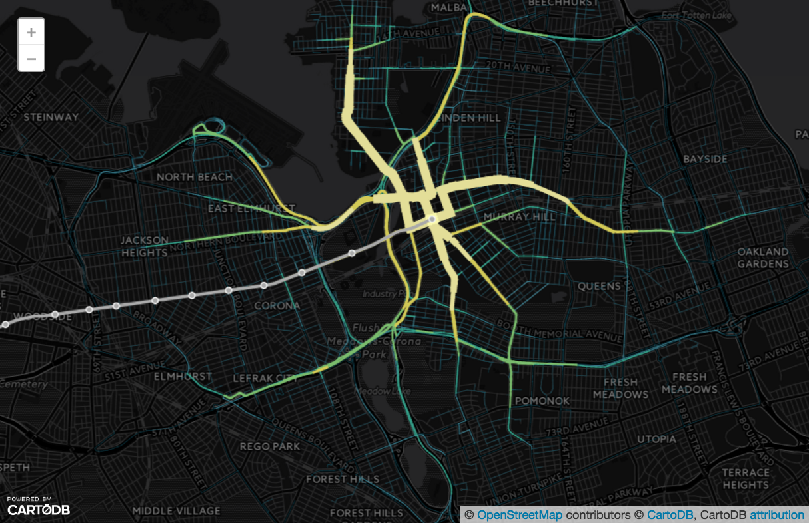

Our analysis shows that, in the best scenario, about 50% of taxi trips near New York City's Flushing Main Street station can be shared with a delay in travel time less than 10 minutes. This can reduce vehicle miles travelled and the associated CO2 emissions by up to 35%!
The map below shows commmon destinations of taxi trips picked up at Flushing-Main Street Station. In addition to the neighborhood immediately around the station, the College Point neighborhood to the north of Flushing is a hotspt of trip destinations. Understanding these concentrations of travel demand could inform where on-demand transit service could be successful, filling the gap between taxi trips and conventional buses.
Click on the map below to launch an interactive map of how shard taxi trips impact road usage. The map shows how many taxi trips use each road segment under different levels of shared taxi trips.
Across all of the sharing scenarios, there is a higher percentage of shared trips when there is a high total number of trips. Click on the streamgraph below to launch it in interactive mode, and explore the potential for shared trips across a typical day at various levels of sharing.